Press the
Windows key and go to
Cognex > In-Sight Explorer to open the In-Sight Explorer application.
In the In-Sight Explorer application go to
View > In-sight Network to open the In-Sight Network pane.
In the In-Sight Network pane go to
In-Sight Sensors > ADV102CQ with the yellow icon.
Figure 481:
Go to
View > Spreadsheet to open the spreadsheet view for the wash wheel camera.
Figure 482:
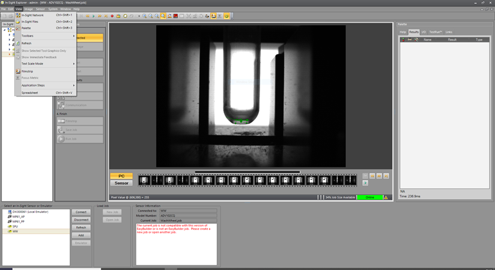
Select the green
Power icon to turn off the wash wheel camera.
Figure 483:
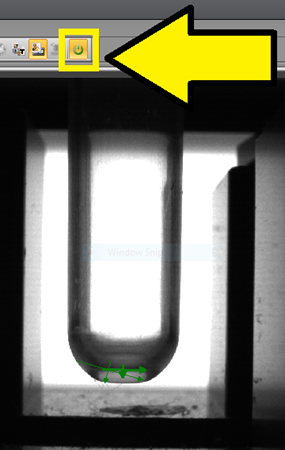
The icon and the status indicator will turn gray to indicate the camera is offline.
Figure 484:
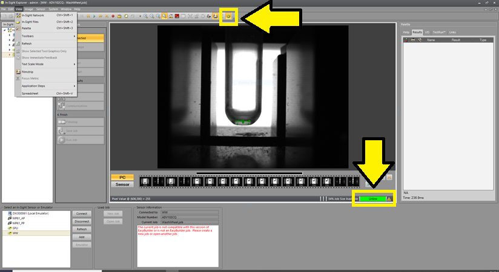
Use a swab and DI water to clean any build-up from the camera lens or the wash wheel tool viewing box.
Turn on the wash wheel camera.
If the wash wheel camera frame has shifted off-center (if the reaction vessel has shifted too far left or right or is tilted), calibrate the wash wheel camera. See
Calibrating the Wash Wheel Dispense Volume Camera Setting for more information.
Figure 485: Wash Wheel Camera Frame Shifted Off-center (Example)
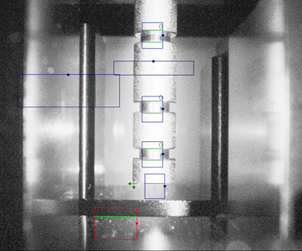
If the secondary green line has shifted to the right:
In the Machine Control App go to
MENU > Machine Control > WashWheel > WashWheel.Assembly > WashWheel.ResidualVolumeMonitor > WashWheel.Camera.Backlight and select the Action tab.
On the Action page select
PutState and select the
state checkbox.
Figure 487: Normal Dispense (Example)Figure 488: Large Bubbles in a Low Fluid Volume (Example)
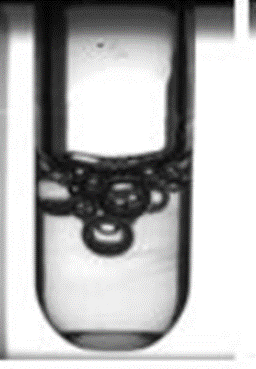
Note: If you fix a leak or a kink in a tube, calibrate the wash wheel pressure sensor before you calibrate the wash wheel camera. See
Calibrating the Pressure Sensors for the Wash Wheel for more information.
If there continues to be no fluid or little fluid, prime the substrate system and continue to watch as the RVs fill up with substrate. See
Priming an Empty Substrate System for more information.
If you do not observe substrate filling the RVs, check all tubing beneath the substrate heater for kinks. Replace the substrate heater, if necessary. See
Replacing Dispense Probe Components for more information.
If you observe unusually large bubbles or too many micro bubbles in the RVs or in the substrate tubing inside the heater after the dispense valve, there might be a leak. Be sure all substrate fluidics connections are tight.
Note: If the lines are completely empty, you might need to prime the substrate system twice.
Replace the in-use substrate bottle. (If there is only one substrate bottle, load a second bottle before removing the in-use bottle.
In the Machine Control App, on the Action page for the
WashWheel.Camera.Backlight automation ID, select
PutState and clear the
state checkbox.
Ensuring the Wash Wheel Camera Has Identified All Horizontal and Vertical References
Select the green
Power icon to turn off the wash wheel camera.
Figure 489:
The icon and the status indicator will turn gray to indicate the camera is offline.
Figure 490:
Go to
View > Spreadsheet Navigator to open the Spreadsheet Navigator Pane.
Select cell L83. The image will display a green line within the horizontal region on the image.
Figure 491: Green Line in Horizontal Region on Wash Wheel Camera Image
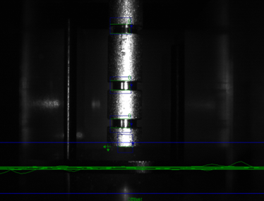
If the region is not correctly aligned, double-click cell L89 to adjust the region until the region is in the correct location.
Select cell L87. The image will display a green line within the vertical region on the image.
If the region is not correctly aligned, double-click cell L90 to adjust the region until the region is in the correct location.
Two green lines should overlap the first groove from the bottom of the tool.
Figure 492: Green Lines Overlapping First Groove
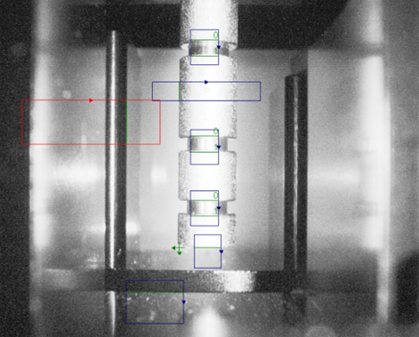
If the two green lines are off-position, double-click cell P54 and adjust the position of region until it is centered on the groove.
The blue region indicated in the image should be centered to cover the entire bottom groove.
Figure 493: Blue Region Not Centered Over Entire Bottom Groove (Example)
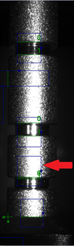
If the calibration tool does not detect the bottom groove edge:
Select the green
Power icon to turn off the wash wheel camera. The icon and status indicator will turn gray to indicate the camera is offline.
Go to
View > Spreadsheet Navigator to open the Spreadsheet Navigator Pane.
In cell P54, the default value is 40. Increase or decrease the value to move the region up or down.
If the secondary green line has shifted to the right:
Figure 494: Secondary Green Line Shifted to Right (Example)
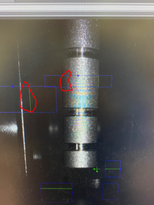
Select the green
Power icon to turn off the wash wheel camera. The icon and status indicator will turn gray to indicate the camera is offline.
Go to
View > Spreadsheet Navigator to open the Spreadsheet Navigator Pane.
Double-click cell L69.
Select the plus sign to the left of the region section.
Type 200 in the
Wide box.
If the red region continues to span both sides of the tool, decrease the Wide value by 10 until only the left-hand side of the tool is within the red region.
Figure 495: Green Line (in Red Region) Indicates Proper Identification
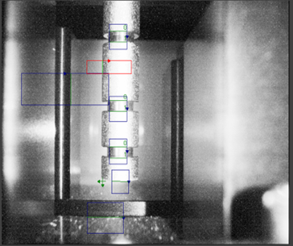
Select
OK.
Select
Save.
Select the gray
Power icon to turn on the wash wheel camera. The icon and status indicator will turn green to indicate the camera is online.
If the bottom edge of the calibration tool is outside the region of interest L71:
Figure 496: Region of Interest (Cell L71)
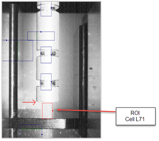
Select the green
Power icon to turn off the wash wheel camera. The icon and status indicator will turn gray to indicate the camera is offline.
Go to
View > Spreadsheet Navigator to open the Spreadsheet Navigator Pane.
Select cell D3.
Double-click cell L71.
Expand
Fixture and in the
Row box decrease the number to move the region higher.
If the bottom edge of the calibration tool is outside the region of interest D3:
Figure 497: Incorrect Alignment (Example)
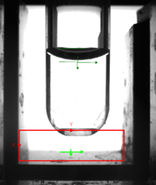
To adjust the region to find the bottom of the vessel, select cell D3.
Double-click cell C28.
Expand
Fixture and adjust the value in the
Row box.
Figure 498: Correct Alignment (Example)
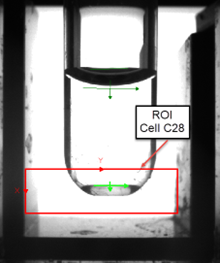
Select
OK.
Select
Save.
If necessary, double-click cell H5 and increase the Exposure value in increments of 0.001. Select
Save.
Ensure all Cognex cameras and sensors are online. For each camera, select the gray
Power icon. The icon will turn green to indicate the camera is online.
Note: If the wash wheel camera now calibrates successfully, and if you changed the Exposure value in a previous step, revert the Exposure value back to 0.500.
In the Machine Control App go to
MENU > Machine Control > WashWheel > WashWheel.Assembly > WashWheel.PostMixVolumeMonitor and select the Action tab.
On the Action page select
SaveCalParamsToDatabase.
Select
Execute.
In-Sight Explorer Updates
Changes to the user interface were implemented in software version 1.12. See the table below for how the user interface changes from software version 1.11 to 1.12.
User Interface in Software Version 1.11
User Interface in Software Version 1.12
Line 1 not found, please check that pattern found in Cell O60 and edges found in Cells P47 and P50. Adjust pattern match threshold (Cell M61), offset (Cell P55), exposure (Cell H5), or threshold (Cell P44) if necessary.
Line 1 not found, please check that bottom of the tool is found (Cell L71). If bottom of tool is found check that bottom groove edges are found (Cell K56). If two edges are not found, adjust offset (Cell P54) up or down until both edges are found around bottom groove. If bottom of tool is not found, adjust region (Cell L89) until horizontal edge is found and region (L90) until vertical edge is found.
Line 2 not found, please check that edges found in Cells P53 and P56. Adjust P54 lower in increments of 1 (Minimum 4) If calibration fails with cell P54 at 4, then increase exposure time in cell H5 by increments of 0.1
Line 2 not found, please check that edges are found (K60, K64). If edges are not found, adjust Threshold (Cell P53) lower in increments of 1 (Minimum 4). If calibration fails with cell P53 at 4, the increase exposure time (Cell H5) by increments of 0.1
One or both of edges found at bottom half of tool are lower/higher than expected. Please check that edges in Cells K57 and K61 are in appropriate area and adjust offset (Cell P55) if needed.
One or both of edges found at bottom half of tool are lower/higher than expected. Please check that edges in Cells K56 and K60 are in appropriate area and adjust Threshold (Cell P53) lower in increments of 1 (Minimum 4).
"One or both of edges found at top half of tool are lower/higher than expected. Please check that edges in Cell K65 are in appropriate area and adjust exposure (Cell H5) or threshold (Cell P54) if needed."
One or both of edges found at the top half of tool are lower/higher than expected. Please check that edges in Cells K60 and K64 are in appropriate area and adjust Threshold (Cell P53) lower in increments of 1 (Minimum 4).
Analyzing the Related Log Files
Obtain copies of the related Process Monitoring log files from both the
Pass and
Fail folders in
D:\ProgramData\Beckman Coulter\Logs\Falcon Process Monitoring\